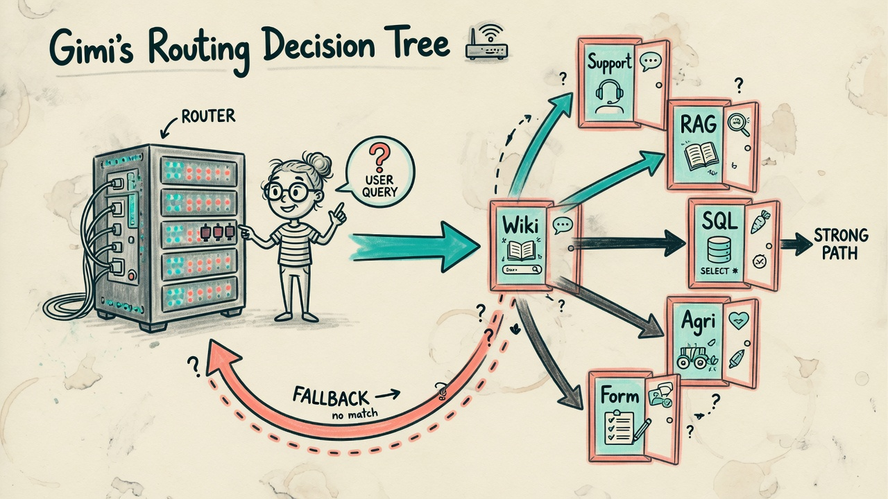
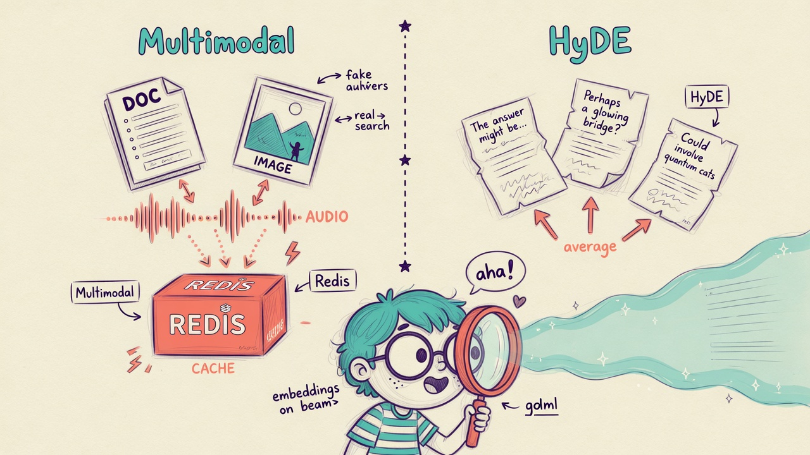

test0719d · CATCH CRM 架構說明
客服總線 + 多庫 RAG
真實庫表的 AI 展示台
說明 test0720-crm（埠 :18720）：
Postgres 看板、客服文字／表單／麥克風、
知識庫路由、多模態 RAG（含 HyDE）、Wiki 樂團、農業、收據 OCR。
配圖風格參考
gimi-illustration-skill
· quirky-sketch · 繁體說明。

FastAPI 中樞 · Postgres · Redis · Qwen · Gemini
① LAN 基建總覽
本機演示埠 :18720 · 資料與模型在遠端 LAN（可改 .env）
一句話：瀏覽器只打本站 FastAPI； Postgres 出 CRM 數字與收據帳本、 Redis 做記憶／RAG 索引、 Qwen 對話與路由編排、 Gemini 負責識圖與語音轉寫（無本機 GPU）。
| 元件 | 預設位址 | 本站用途 |
|---|---|---|
| FastAPI | 127.0.0.1:18720 | 頁面 + 全部 API |
| PostgreSQL | 100.88.220.82:5432 / catch_crm | 帳戶、商機、電商、收據 |
| Redis | :6379 | 客服記憶、填表草稿、mmrag／Wiki 索引 |
| Qwen | :8080/v1/chat/completions | 客服、SQL、農業、HyDE 假想文 |
| Gemini | Google AI Studio | 收據 OCR、語音 STT、多模態描述 |
② 客服多模態總線
同一面板：文字 · 表單 · 麥克風（Gemini STT）
一句話：客戶可以用打字、填服務申請表、或按 🎤 錄音；語音先經 Gemini 轉寫，再進入目前選定的模式 （知識庫路由／部門路由／記憶／SQL…）。

主路徑
瀏覽器 #ai
→ 文字 POST /api/cs/*
→ 表單 /api/forms/*
→ 🎤 /api/cs/voice
Gemini STT → 同一 mode
模式（可切）
- 知識庫路由 — 自動選庫（預設）
- 部門路由 — resolve / escalate
- 客服記憶 · CRM 問答 · 填表 · 中文查庫
③ 知識庫路由
精簡自 Hands-On database routing · 無 Orq／Qdrant
一句話：一則問題先分類到哪個庫 （客服 FAQ、多模態 RAG、Wiki 樂團、SQL、農業、CRM KPI、填表）， 再檢索回答；若命中太弱，回退客服 FAQ，右側顯示路由理由與來源。

| database | 繁中 | 典型問句 |
|---|---|---|
support | 客服 FAQ／升級 | 退貨、發票、401、投訴 |
mmrag | 多模態知識庫 | 依文件／圖／音回答 |
wikiband | Wiki 樂團 | 主唱、專輯、Nirvana… |
sql | CRM 查表 | 多少帳戶、管道 Top |
agri | 農業 | 番茄黃葉、插秧天氣 |
crm / form | KPI／填表 | 業績建議、約演示 |
POST /api/cs/kb-route
{ customer_id, message }
→ routing + reply + sources + fallback_used
④ 多模態 RAG · HyDE · 垂直分頁
與總線並列：mmrag、農業、Wiki 樂團、收據
一句話：文件／URL／圖／音寫入 Redis 索引； 可開 HyDE（假想答案 → 向量平均 → 檢索）提升短問命中。 另有 Wikipedia+BM25 樂團庫、農業工具鏈、Gemini 收據入 Postgres。

mmrag + HyDE
索引 /api/mmrag/text|url|media 提問 /api/mmrag/ask hyde=true, n_hyde=3 → 假想文 → embed 平均 → top-k → Gemini 引用回答
垂直分頁
- 農業 — 天氣／作物曆／RSS → Qwen
- Wiki 樂團 — MediaWiki + BM25
- 收據 — Gemini OCR →
receipt_expenses
⑤ 側欄地圖 · 怎麼開
展示台與本說明頁的對應
| 側欄 | 你會看到 | 關鍵 API |
|---|---|---|
| 儀表板～競品 | Postgres CRM 表 | /api/dashboard… |
| 客服 AI | 文字／表單／mic／KB 路由 | /api/cs/kb-route · /api/cs/voice |
| 多模態 RAG | 索引 + HyDE 開關 | /api/mmrag/* |
| 農業客戶 | 多工具助理 | /api/agri/ask |
| Wiki 樂團 | Wiki + BM25 | /api/wikiband/* |
| 收據費用 | OCR 帳本 | /api/expenses/* |
| 基礎設施 | 連線健康 | /api/infra/status |
啟動展示台：
cd F:\grok\3\cbot\test0720-crm .\start.ps1 # http://127.0.0.1:18720/ # 架構說明：http://127.0.0.1:18720/crm-explain # 或直接開本資料夾 index.html